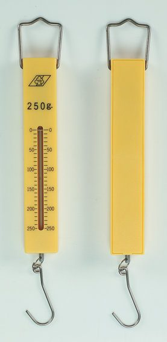

五年級自然｜第四單元 力與運動 課本 92–93 頁
⏱ ⑭｜暖身（伸長量＋彈性限度）3｜open2｜parts5｜rules9｜read7｜tools4｜習作P.36 3｜學習單7｜合計40。全班必做一、三。⑥ 闖關驗收三題：學習單寫完還有時間，全班先舉卡、再請一位同學上台按。
課前：找歸零鈕或螺絲，量物重時直立歸零，用已知100公克重砝碼檢查兩支最大250秤。已確認內部照片左短右長。器材夠可由老師決定每組傳一支摸摸看，不強制。低：數格子、圈選、助手歸零；中：構造與分類；高：視線偏差操作與解說、★／★★。
家長檢核：體重計只看內部照，不量或說出學生體重。不要拉超過最大刻度。
示範前每人先在預測格寫，再舉卡；2–3 位小助手男女輪值，優先邀請平常較被動的學生。小助手唸數字，全班複誦；示範後播「示範重播」放大給全班看，或白底板巡迴約 30 秒、每排一位觀察代表上前看。高能力學生當數據審查員，中能力用「我看到＿＿，所以＿＿」，低能力可看詞語框與步驟卡。課堂選做未寫完不帶回家；回家只有習作，不派實驗。
④⑤站的藍框：左邊是全班一起做的步驟與說法（低、中），右邊是 ★ 挑戰（先做完的人），答案收在「想好了再打開」。第一次教這課，記下讀題、舉卡、觀察代表走動、同步填習作與收束的實際分鐘，依班級速度調整。用眼 30 分鐘要休息 10 分鐘；線上練習是自由練習。
課本問：除了用彈簧和砝碼，還有其他方法可以測量用力的大小嗎？
暖身問伸長量怎麼算、如何檢查彈性限度；每人先寫預測再舉卡。

小助手指出吊環、彈簧、指針、刻度讀數與掛鉤，其他人同步寫名稱。③指針點在刻度窗最上面的 0（照片沒有掛東西）。內部照片已打開確認：左邊彈簧短＝沒掛，右邊彈簧長＝有掛。
示範用兩支最大250秤與砝碼。助手歸零、掛砝碼、蹲低同高唸讀數。抓錯三次：沒歸零、倒掛、上往下斜看；每次全班舉╳，正確重做。示範後可以播「示範重播」：歸零、掛砝碼、眼睛和指針同高，一格一格看。
一起讀刻度：
說說看：「一小格是＿＿公克重，指針停在＿＿，所以是＿＿公克重。」
★ 挑戰：用力不變，只把眼睛移高或移低，讀到的數字會變。是彈簧秤受的力變了嗎？
不是。力沒有變，指針也沒有動；是眼睛斜著看，對到了別的刻度。眼睛要和指針同高再讀。
先問一小格幾公克重；250秤每小格10，500秤數字間隔100、每小格20。到最大刻度就換秤，不強拉。操作眼睛上下，解釋偏差；斜看時的讀數只是示意，差一小格是為了讓學生看出「會讀錯」，不是固定的誤差值。先讓全班說出一小格和讀數，再打開答案；改任何設定答案會自動收起。課本照片的150是照片本身的讀數，不是滑桿每次的答案。
一起判斷：老師指一種工具，大家舉 ○ 或 ╳：「它能讀出重量或力的大小嗎？」
先看：它有沒有刻度？說說看：「＿＿有（沒有）刻度，所以是（不是）測量工具。」
★ 挑戰：怎麼知道一支彈簧秤量得準不準？
掛上已知重量的砝碼（例如 100 公克重），看讀數是不是 100 公克重。
| 測量工具 | 有彈簧但不是測量工具 |
|---|---|
| 彈簧秤、體重計、磅秤 | 摩托車避震器、遊樂器材、彈簧床 |
水果攤：先放好空籃子，再歸零，放進水果後讀到的就是水果的重量。
接習作P.36測量工具條件，上課3分鐘其餘回家；不量學生體重。
答錯可再試，該層得分減半。只顯示本次練習成果，不排學生名次。
學習單7分鐘必做一、三；★／★★先完成者選做。三題闖關約 3 分鐘：全班先舉卡，再請一位同學上台按。